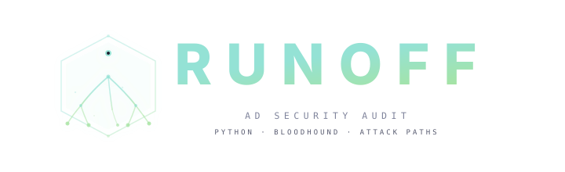

Active Directory Security Audit Tool
Extract quick wins, attack paths, and misconfigurations from BloodHound Community Edition. 177 security queries across 15 categories with exploitation guidance, severity ratings, and multi-format reporting.
Query BloodHound CE data for attack paths, misconfigurations, and privilege escalation opportunities with exploitation guidance.
ACL abuse, ADCS ESC1-ESC15, delegation, coercion relay, lateral movement, Azure/hybrid, and credential attacks -- all registered via decorator and runnable by category.
Properties, attack edges, group memberships, admin rights, sessions, and paths to Domain Admins in a single command. Wildcard patterns trigger triage mode.
Exploitation commands alongside every finding -- Impacket, Certipy, bloodyAD, Rubeus -- with auto-substituted targets, domains, and OPSEC warnings.
Table, JSON, CSV, HTML, and Markdown reports from a single run. Structured output to stdout, status to stderr. Pipe-friendly for jq and csvtool.
Shortest paths to Domain Admins, Domain Controllers, or between arbitrary nodes. Tree-view rendering with relationship labels and hop counts.
Mark compromised accounts, run targeted queries to find escalation paths from your current foothold. Owned principals highlighted throughout all output.
CLI commands connect to Neo4j, execute Cypher queries via the core engine, and render results through the display layer.
Click CLI framework with global options, context manager, and 11 command modules
BloodHoundCE class, Neo4j driver, Cypher utilities, risk scoring, domain filtering
Rich tables, panels, trees, progress bars, Catppuccin Mocha theme, HTML reports
177 queries in 15 category folders, self-registering via @register_query decorator
YAML template loader with exploitation commands per technique
BloodHound CE API integration -- HMAC auth, ingest, clear, history
pip install, point at Neo4j, and run 177 queries against your BloodHound CE data.